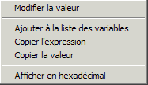

Si vous cliquez avec le bouton droit de la souris à l'intérieur d'une fenêtre de débogage rapide, vous ouvrez un menu surgissant du type suivant :

Modifier la valeur : Permet de saisir une nouvelle valeur pour la donnée courante.
Ajouter à la liste des variables : Ajoute la donnée courante à la fenêtre "Variables".
Copier l'expression : Copie le nom de la donnée (ou l'expression) courante dans le presse-papier.
Copier la valeur : Copie la valeur de la donnée courante dans le presse-papier.
Afficher en hexadécimal : Permet de choisir le type d'affichage des données (décimal ou hexadécimal).